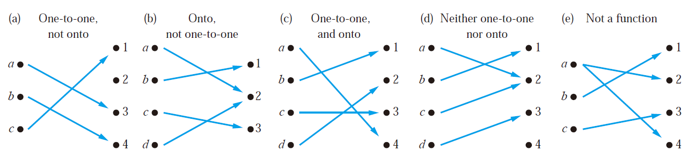

Part 02 Function and Sequence
Covering 2.3~2.4
Functions 函数
Definitions 定义
Let A and B be nonempty sets. A function f from A to B is an assignment of exactly one element of B to each element of A.
We write f (a) = b if b is the unique element of B assigned by the function f to the element a of A.
If f is a function from A to B, we write f : A → B.
A → B is a subset of A × B
Functions are sometimes also called mappings（映射） or transformations（变换）
$f:A\to B$
$\forall a(a\in A\to\exists!b(b\in B\wedge f(a)=b))$
A : domain（定义域）
B : codomain（陪域）
b : image（像）
- a : preimage（原像）
The range（值域）, or image, of f is the set of all images of elements of A.
If f is a function from A to B, we say that f maps（映射） A to B.
Two Notations:
$(f_1+f_2)(x)=f_1(x)+f_2(x)$
$(f_1f_2)(x)=f_1(x)f_2(x)$
Let f be a function from A to B and let S be a subset of A. The image of S under the function f is the subset of B that consists of the images of the elements of S. We denote the image of S by f (S), so
$f(S)={f(s)|s\in S}$
$f(S\cup T)=f(S)\cup f(T)$
$f(S\cap T)\subseteq f(S)\cap f(T)$
Explaination:
For the first equivalent, just prove $f(S+T)\subseteq f(S)+f(T)$ and $f(S)+f(T)\subseteq f(S+T)$ using the method proof by cases
For the second one, itself is easy to prove, but the interesting part is how to give a counterexample to prove that $f(S)\cap f(T)\subseteq f(S\cap T)$ is wrong.
This counterexample is that when f() is not one-to-one (this will be mentioned right below), the latter one can be larger than the previous one! (Specific example omitted)
The graph（图） of the function f is the set of ordered pairs
${(a,b)|a∈A\wedge f(a)=b}$
A monotonic（单调） function f is either monotonically (strictly) increasing ($\forall x\forall y(x
Correspondences 对应关系
One-to-One Function 一对一函数
A function f is one-to-one（一对一） (denoted 1-1), or injective（单射函数）if
$\forall a\forall b(f(a)=f(b)\to a=b)$
Onto Functions 映上函数
A function f from A to B is called onto（映上）, or surjective（满射） if
$\forall b\in B\exists a\in A(f(a)=b)$
In short, every b in B has a preimage.
One-to-one Correspondence Functions 一一对应函数
The function f is a one-to-one correspondence（一一对应）, or a bijection（双射）, if it is both one-to-one and onto
Whenever there is a bijection from A to B, the two sets must have the same number of elements or the same cardinality.
Examples of Different Types of Correspondences

Suppose that f : A → B
- To show that f is injective, show that if f (x) = f (y) for arbitrary x, y ∈ A, x = y.
- To show that f is not injective, find particular elements x, y ∈ A such that x ≠ y and f (x) = f (y).
- To show that f is surjective, consider an arbitrary element y ∈ B and find an element x ∈ A such that f (x) = y.
- To show that f is not surjective Find a particular y ∈ B such that f (x) ≠ y for all x ∈ A.
Special Functions 特殊函数
Inverse Functions 反函数
Let f be a one-to-one correspondence from the set A to the set B, the inverse function of f is denoted by $f^{-1}$
$f^{-1}(y)=x$ iff $f(x)=y$
No inverse function exists unless f is a bijection
Function f is invertible（可逆的） iff f is bijective
Compositions of Functions 复合函数
$f\circ g(a)=f(g(a))$
$f\circ g$ can’t be defined unless the range of g is a subset of the domain of f.
Two Important Functions 两大重要函数
The floor function 取底函数
The floor function f (x) is the largest integer less than or equal to the real number x
$\lfloor x\rfloor$
The floor function is often also called the greatest integer function. It is often denoted by [x]
The ceiling function 取顶函数
$\lceil x\rceil$

Sequence 序列
A sequence is a function from a subset of the set of intergers (usually either the set {0,1,2,…} or the set {1,2,3,…}) to a set S. We use the notation $a_n$ to denote the image of the image of the integer n. We call $a_n$ a term of the sequence ${a_n}$.
The order in a sequence matters!
Some Sequences 一些序列
Geometric Progression 几何级数
$a,ar,ar^2,ar^3,...,ar^n,...$
Arithmetic Progression 算术级数
$a,a+d,a+2d,...,a+nd,...$
Recurrence 递推
e.g. Fibonacci Sequence
Summations 求和
$$ \begin{equation} \sum{i=m}^na_i=\sum\nolimits{i=m}^nai=\sum\nolimits{m≤i≤n}ai=a_m+a{m+1}+...+a_n \end{equation}
$$
$ \sum_{s∈S}f(s) $
Some Useful Summation Formulae 求和公式
$ \sum_{k=1}^nk^2=\frac{n(n+1)(2n+1)}{6} $
$ \sum_{k=1}^nk^3=\frac{n^2(n+1)^2}{4} $
$ \sum_{k=1}^{\infin}kx^{k-1}=\frac{1}{(1-x)^2},|x|<1 $